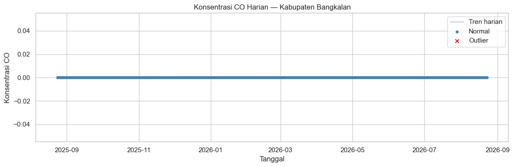
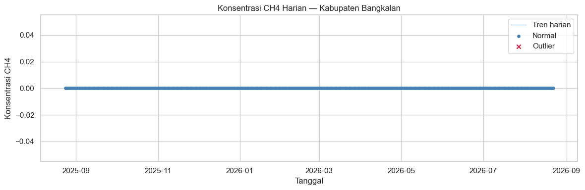

Analisis Kualitas Udara — Kabupaten Bangkalan#
Notebook ini melanjutkan hasil ekstraksi dari 1-ekstraksi-data.ipynb untuk
melakukan eksplorasi dan analisis deret waktu polutan udara (NO2, CO, SO2,
CH4) di Kabupaten Bangkalan.
Alur kerja notebook ini:
Import pustaka yang dibutuhkan
Memuat data CSV hasil ekstraksi
Visualisasi peta interaktif area Bangkalan dengan
foliumPengecekan & penanganan missing values pada data deret waktu
Deteksi anomali/outlier dengan
IsolationForestVisualisasi deret waktu yang membedakan titik normal vs outlier
1. Import Pustaka#
pandas,numpy— manipulasi data tabular & numerik.matplotlib,seaborn— visualisasi grafik statis.folium— peta interaktif.sklearn.ensemble.IsolationForest— algoritma deteksi anomali.glob,os— membaca banyak file CSV sekaligus dari folder data.
import glob
import os
import folium
import matplotlib.pyplot as plt
import numpy as np
import pandas as pd
import seaborn as sns
from sklearn.ensemble import IsolationForest
sns.set_theme(style="whitegrid")
2. Konfigurasi & Memuat Data CSV#
Bagian ini mendefinisikan ulang informasi wilayah Bangkalan (untuk peta) dan
memuat seluruh file CSV hasil ekstraksi dari folder ../data/csv/ ke dalam
satu kamus dataframes, dengan key berupa nama polutan.
Setiap CSV diasumsikan memiliki dua kolom: date dan nama polutan (mengikuti
format keluaran dari notebook ekstraksi).
# --- Informasi wilayah Bangkalan (harus konsisten dengan notebook ekstraksi) ---
bangkalan_bbox = {
"west": 112.671,
"east": 113.116,
"south": -7.227,
"north": -6.848,
}
bangkalan_center = (
(bangkalan_bbox["south"] + bangkalan_bbox["north"]) / 2,
(bangkalan_bbox["west"] + bangkalan_bbox["east"]) / 2,
)
CSV_DIR = "../data/csv/"
POLLUTANTS = ["NO2", "CO", "SO2", "CH4"]
dataframes = {}
for pollutant in POLLUTANTS:
csv_path = os.path.join(CSV_DIR, f"bangkalan_{pollutant}.csv")
if not os.path.exists(csv_path):
print(f"[{pollutant}] File tidak ditemukan: {csv_path} (lewati)")
continue
df = pd.read_csv(csv_path, parse_dates=["date"])
df = df.sort_values("date").reset_index(drop=True)
dataframes[pollutant] = df
print(f"[{pollutant}] Dimuat: {len(df)} baris, "
f"{df['date'].min().date()} s.d. {df['date'].max().date()}")
[NO2] Dimuat: 292 baris, 2025-08-24 s.d. 2026-08-23
[CO] Dimuat: 275 baris, 2025-08-24 s.d. 2026-08-23
[SO2] Dimuat: 322 baris, 2025-08-24 s.d. 2026-08-23
[CH4] Dimuat: 82 baris, 2025-08-24 s.d. 2026-08-22
3. Peta Interaktif Wilayah Bangkalan#
Peta folium di bawah menampilkan:
Marker di titik pusat (centroid) bounding box Bangkalan.
Kotak polygon (
folium.Rectangle) yang menggambarkan batas bounding box yang dipakai saat ekstraksi data satelit.
Peta ini membantu memverifikasi secara visual bahwa area yang diekstraksi benar-benar mencakup wilayah Kabupaten Bangkalan.
m = folium.Map(location=bangkalan_center, zoom_start=10, tiles="OpenStreetMap")
folium.Rectangle(
bounds=[
(bangkalan_bbox["south"], bangkalan_bbox["west"]),
(bangkalan_bbox["north"], bangkalan_bbox["east"]),
],
color="crimson",
weight=2,
fill=True,
fill_opacity=0.1,
tooltip="Bounding box Kabupaten Bangkalan",
).add_to(m)
folium.Marker(
location=bangkalan_center,
tooltip="Titik pusat Kabupaten Bangkalan",
icon=folium.Icon(color="red", icon="cloud"),
).add_to(m)
m
4. Pengecekan & Penanganan Missing Values#
Untuk setiap polutan, kita:
Melengkapi deret waktu agar memiliki baris untuk setiap hari dalam rentang tanggal (beberapa hari mungkin tidak memiliki data sama sekali akibat tutupan awan atau tidak ada lintasan satelit), menggunakan
asfreq("D").Menghitung jumlah dan persentase nilai
NaNsebelum penanganan.Mengisi nilai yang hilang dengan interpolasi linear berbasis waktu (
interpolate(method="time")), yang cocok untuk data deret waktu kontinu seperti konsentrasi polutan atmosfer.Menggunakan
ffill/bfillsebagai fallback untuk NaN di ujung awal/akhir deret waktu yang tidak bisa diinterpolasi.
def fill_missing_timeseries(df, value_col):
"""Melengkapi tanggal yang hilang lalu mengisi NaN dengan interpolasi waktu."""
df = df.set_index("date").asfreq("D")
n_missing_before = df[value_col].isna().sum()
pct_missing_before = 100 * n_missing_before / len(df)
print(f" Missing sebelum penanganan: {n_missing_before} dari {len(df)} "
f"baris ({pct_missing_before:.1f}%)")
df[value_col] = df[value_col].interpolate(method="time")
df[value_col] = df[value_col].ffill().bfill()
n_missing_after = df[value_col].isna().sum()
print(f" Missing setelah penanganan : {n_missing_after}")
return df.reset_index()
for pollutant, df in dataframes.items():
print(f"[{pollutant}]")
dataframes[pollutant] = fill_missing_timeseries(df, pollutant)
[NO2]
Missing sebelum penanganan: 73 dari 365 baris (20.0%)
Missing setelah penanganan : 0
[CO]
Missing sebelum penanganan: 90 dari 365 baris (24.7%)
Missing setelah penanganan : 0
[SO2]
Missing sebelum penanganan: 43 dari 365 baris (11.8%)
Missing setelah penanganan : 0
[CH4]
Missing sebelum penanganan: 282 dari 364 baris (77.5%)
Missing setelah penanganan : 0
5. Deteksi Anomali dengan IsolationForest#
IsolationForest mendeteksi titik-titik yang “mudah dipisahkan” dari titik
lainnya sebagai anomali. Parameter contamination=0.05 berarti kita
memperkirakan sekitar 5% dari data adalah outlier.
Untuk setiap polutan:
Nilai konsentrasi di-reshape menjadi array 2D
(n_samples, 1)karenaIsolationForestmengharapkan input berbentuk matriks fitur.Model di-fit dan memprediksi label untuk setiap titik:
1= normal,-1= anomali/outlier.Label tersebut disimpan pada kolom baru
anomaly(True/False) agar mudah dipakai saat visualisasi.
def detect_outliers_isolation_forest(df, value_col, contamination=0.05, random_state=42):
"""Menambahkan kolom boolean 'anomaly' menggunakan IsolationForest."""
values = df[[value_col]].values # bentuk (n_samples, 1)
model = IsolationForest(contamination=contamination, random_state=random_state)
raw_labels = model.fit_predict(values) # 1 = normal, -1 = outlier
df = df.copy()
df["anomaly"] = raw_labels == -1
n_outliers = df["anomaly"].sum()
print(f" Outlier terdeteksi: {n_outliers} dari {len(df)} titik "
f"({100 * n_outliers / len(df):.1f}%)")
return df
for pollutant, df in dataframes.items():
print(f"[{pollutant}]")
dataframes[pollutant] = detect_outliers_isolation_forest(df, pollutant)
[NO2]
Outlier terdeteksi: 0 dari 365 titik (0.0%)
[CO]
Outlier terdeteksi: 0 dari 365 titik (0.0%)
[SO2]
Outlier terdeteksi: 0 dari 365 titik (0.0%)
[CH4]
Outlier terdeteksi: 0 dari 364 titik (0.0%)
6. Visualisasi Deret Waktu: Normal vs Outlier#
Untuk setiap polutan digambar satu grafik yang terdiri dari:
Garis (line plot) yang menunjukkan tren konsentrasi harian secara keseluruhan.
Titik biru untuk data normal.
Titik merah untuk data yang terdeteksi sebagai outlier oleh
IsolationForest.
Visualisasi ini memudahkan identifikasi periode dengan lonjakan/penurunan konsentrasi polutan yang tidak biasa, misalnya akibat aktivitas industri tertentu atau anomali kualitas data satelit.
for pollutant, df in dataframes.items():
normal_df = df[~df["anomaly"]]
outlier_df = df[df["anomaly"]]
plt.figure(figsize=(12, 4))
plt.plot(df["date"], df[pollutant], color="steelblue", linewidth=1,
alpha=0.6, label="Tren harian")
plt.scatter(normal_df["date"], normal_df[pollutant], color="steelblue",
s=15, label="Normal")
plt.scatter(outlier_df["date"], outlier_df[pollutant], color="crimson",
s=35, marker="x", label="Outlier")
plt.title(f"Konsentrasi {pollutant} Harian — Kabupaten Bangkalan")
plt.xlabel("Tanggal")
plt.ylabel(f"Konsentrasi {pollutant}")
plt.legend()
plt.tight_layout()
plt.show()


Penutup#
Beberapa langkah lanjutan yang bisa kamu tambahkan sendiri sesuai kebutuhan tugas Proyek Sains Data:
Membandingkan pola musiman antar-polutan (misalnya dengan
df.resamplebulanan).Menghitung korelasi antar-polutan (
pandas.DataFrame.corr).Mengaitkan tanggal-tanggal outlier dengan kejadian tertentu (hari besar, cuaca ekstrem, aktivitas industri) sebagai bagian dari interpretasi hasil.
Menyusun narasi kesimpulan untuk laporan Jupyter Book berdasarkan pola yang ditemukan pada grafik di atas.